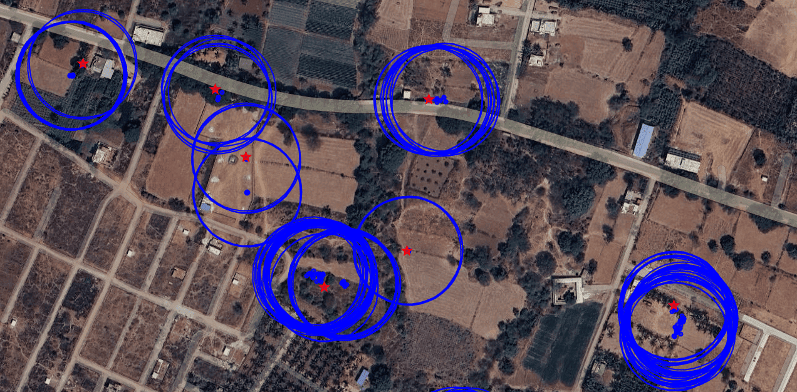

Research Projects
Crop Type Mapping for India
June 2025 - Present
Developing scalable ML classifiers to identify crop groups across India, enhancing agricultural planning with Google Earth Engine and Sentinel-2 data.
View on GitHub Intra-annual LULC Mapping for India
2022 - 2025
Built a GEE-based framework for LULC mapping, integrating SAR/Optical data and powering decision-support tools for 100+ villages. Supports 25+ partner organizations and 50+ village development plans.
View on GitHub CoRE Stack App